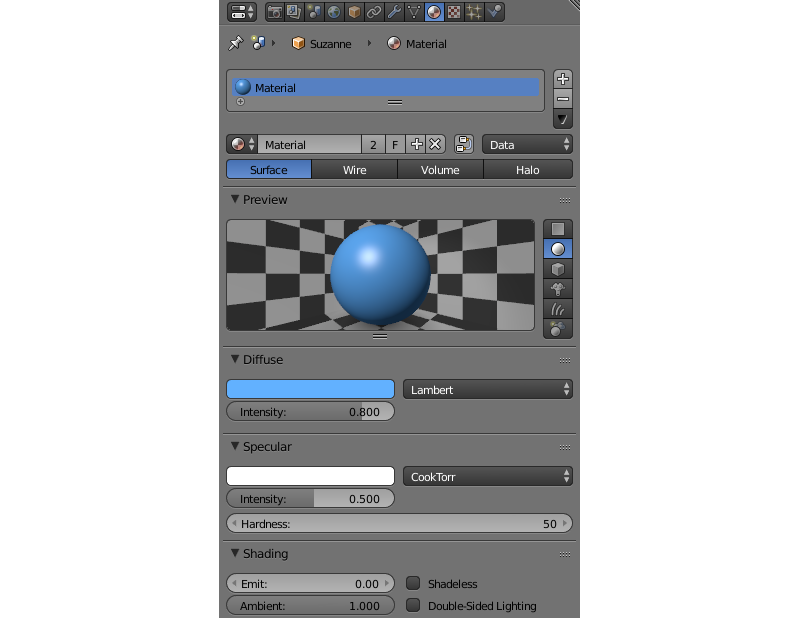
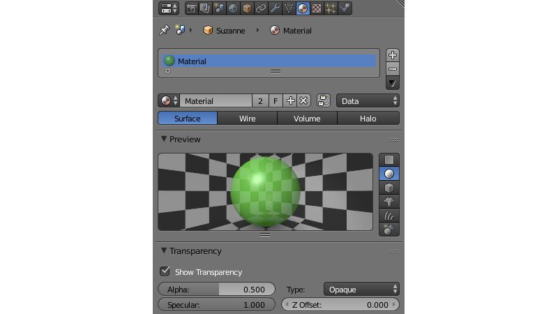
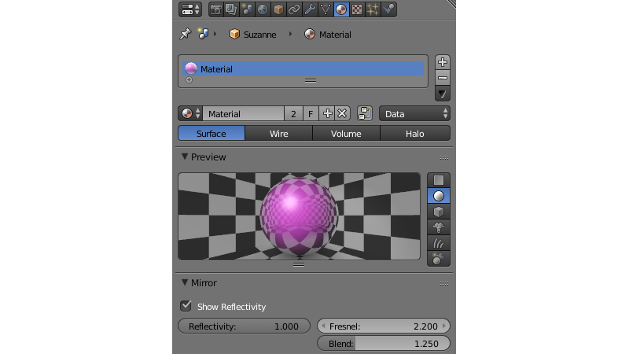
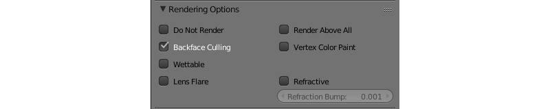
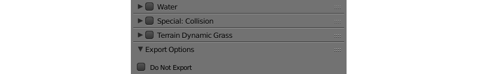

Материалы¶
Содержание
Материалы описывают реакцию поверхности объекта на освещение, а также содержат информацию о ее прозрачности, отражающей способности, физических и других параметрах.
Меши могут использовать один или несколько материалов. В случае использования нескольких материалов назначение их различным полигонам происходит в режиме редактирования Edit Mode. Для этого нужно выделить нужные полигоны, выбрать материал из списка и нажать кнопку Assign.
Поддерживаются следующие типы материалов: Surface (поверхность), Halo (гало).
Параметры освещения¶
{kind=link}
- Diffuse > Color
Цвет диффузного (рассеянного) света. Значение по умолчанию (0.8, 0.8, 0.8). Может взаимодействовать с цветом диффузной текстуры.
- Diffuse > Intensity
Интенсивность диффузного (рассеянного) света. Значение по умолчанию 0.8.
- Diffuse > Shader
Алгоритм расчета диффузного (рассеянного) освещения. Значение по умолчанию
Lambert.- Specular > Color
Цвет отраженного света. Значение по умолчанию (1.0, 1.0, 1.0). Может взаимодействовать с цветом карты бликов.
- Specular > Intensity
Интенсивность отраженного света. Значение по умолчанию 0.5.
- Specular > Hardness
Степенной показатель в формуле расчета отраженного света (“жесткость” блика). Значение по умолчанию 50. Алгоритм применения в движке отличается от алгоритма применения в Blender’e.
- Specular > Shader
Алгоритм расчета отраженного освещения. Значение по умолчанию
CookTorr.- Shading > Emit
Интенсивность эмиссии (излучения). Значение по умолчанию 0.0.
- Shading > Ambient
Фактор влияния освещения от окружающей среды на материал. Значение по умолчанию 1.0.
- Shading > Shadeless
При включении материал не реагирует на освещение. По умолчанию выключено.
- Shading > Tangent Shading
При включении этого параметра движок использует тангенциальный вектор материала (вместо нормального вектора) для рассчёта итогового цвета объекта. Может применяться для имитации анизотропных поверхностей.
Слева: стандатрное затенение, справа: тангенциальное затенение.
- Shading > Double-Sided Lighting
Включить двухстороннее освещение. Опция полезна для однослойных непросвечивающих объектов.
{kind=link}
Прозрачность¶
{kind=link}
Типы¶
Тип реализации прозрачности выбирается в меню Transparency на панели Properties > Material.
Движком поддерживаются следующие типы реализации прозрачности, перечисленные в порядке увеличения производительности:
- Alpha Sort
Прозрачный с градиентом. Для корректного отображения перекрывания одних прозрачных поверхностей другими движком производится сортировка треугольников по дальности от камеры. Операция требует дополнительных затрат вычислительных ресурсов. Рекомендуется применять для замкнутых прозрачных объектов (бутылка, стекла автомобиля и т.д.).
- Alpha Blend
Прозрачный с градиентом. Сортировка треугольников не производится. Рекомендуется применять для незамкнутых прозрачных объектов (поверхность воды, декали).
- Add
Прозрачный c градиентом. Сортировка треугольников не производится. Движок отключает запись в буфер глубины, что приводит к произвольному порядку отображения прозрачных поверхностей. Рекомендуется применять для создания эффектов (системы частиц, светящиеся лучи).
- Alpha Clip
Прозрачный без градиента. Движок отбрасывает пикселы (discard) с прозрачностью менее 0.5. Сортировка треугольников не производится. Рекомендуется применять с текстурой в качестве маски для визуализации множества мелких деталей (листва деревьев, трава).
- Opaque
Непрозрачный. Альфа-канал игнорируется. Значение по умолчанию.
{kind=link}
Дополнительные настройки¶
- Transparency > Show Transparency
Опция включения прозрачности требуется для отображения прозрачных объектов в Blender’e. Движок игнорирует эту опцию, используя вместо нее
Alpha Blend.- Transparency > Alpha
Уровень прозрачности материала. При наличии диффузной текстуры движок (в отличие от Blender’a) игнорирует этот параметр, используя вместо него значение прозрачности текстуры.
- Transparency > Z Offset
Используется для явного указания расположения прозрачных объектов с разными материалами относительно друг друга с целью сортировки по глубине. Может принимать отрицательные и положительные значения. Для корректного отображения дальние объекты должны иметь меньшее значение параметра, чем ближние. Значение по умолчанию 0.0.
Зеркальное отражение¶
{kind=link}
Статическое отражение¶
Поверхность отражает одно и то же изображение вне зависимости от изменения окружающей среды. Для активации достаточно использовать карту зеркального отражения.
См.также
Динамическое отражение¶
Поверхность отражает текущее расположение определенных объектов. Поддерживаются отражения от плоскости и сферические отражения.
Примечание
При использовании нодовых материалов динамические отражения будут работать только в том случае, если в нодовом дереве присутствует нода Material или Extended Material.
Активация¶
Проверить опцию
Reflectionsна панелиRender > Reflections and Refractions.Для отражающих объектов на панели
Object > Reflectionsвыставить опциюReflective.Для плоских отражений выставить значение
Object > Reflections > TypeвPlane. Добавить пустой объект для задания плоскости отраженияAdd > Empty > Single Arrow. Переименовать для удобства и указать его имя в полеReflection planeотражающего объекта.Для кубических отражений выставить значение
Object > Reflections > TypeвCube.
Для нужных материалов отражающих объектов выставить значение отражающей способности
Material > Mirror > Reflectivity.Mirror > Reflectivity > Show Reflectivityтребуется для отображения отражений на объектах в Blender’e. Движок игнорирует эту опцию.
Для отражаемых объектов на панели
Object > Reflectionsвыставить опциюReflexible.
Примечание
Рекомендуется также включить использование освещения от окружающей среды World > Environment Lighting.
Эффект Френеля для отражения¶
Эффект Френеля проявляется в зависимости интенсивностей проходящего и отраженного света от угла падения. Если угол падения близок к нулю (т.е. свет падает почти перпедикулярно поверхности), доля проходящего света велика, а отраженного мала. И наоборот, если угол падения близок к 90 градусам (т.е. свет падает почти параллельно поверхности), отражается почти весь свет.
Движок использует приближенную формулу Шлика:
R = R0 + (1 − R0)(1 - cos θ)N, где
R - коэффициент отражения,
R0 - коэффициент отражения в случае обзора под прямым углом к поверхности (т.е. при θ = 0),
θ - угол падения (равный углу отражения, под которым свет попадает в камеру), рассчитывается движком в реальном времени,
N - показатель степени.
Настройка¶
Эффект Френеля применяется как для статического, так и для динамического отражения.
- Material > Mirror > Fresnel
Степень Френеля для отражения. Показатель степени N в формуле Шлика. В пакете Blender ограничен значениями от 0 до 5. Если этот параметр равен нулю, эффект Френеля не проявляется, происходит полное отражение на всех углах. Если этот параметр больше нуля, при обзоре поверхности под углами, близкими к прямому (почти перпендикулярно поверхности), материал становится менее отражающим. Чем больше этот параметр, тем больше отклонение угла от прямого, для которого наблюдается такой эффект.
- Material > Mirror > Blend
Фактор Френеля для отражения. Приводится к R0 в формуле Шлика: R0 = 1 -
Blend/ 5. В пакете Blender ограничен значениями от 0 до 5. Этот параметр показывает интенсивность проявления эффекта Френеля: чем больше факторBlend, тем сильнее влияние эффекта Френеля. Если он равен нулю, эффект Френеля не проявляется.

Опции рендеринга¶
{kind=link}
- Material > Rendering Options > Do not Render
Отключить рендеринг объекта.
- Material > Rendering Options > Backface Culling
При включении обратная сторона полигона не отображается движком. По умолчанию включено.
- Material > Rendering Options > Wettable
Для материала активируется эффект смачивания водой.
См.также
- Material > Rendering Options > Lens Flare
Включает эффект Lens Flare для материала.
- Material > Rendering Options > Render Above All
Материал отрисовывается поверх всех объектов на сцене. Требует тип прозрачности c градиентом (
Add,Alpha BlendилиAlpha Sort)- Material > Rendering Options > Vertex Color Paint
Опция включает использование вертексного цвета меша вместо диффузного цвета.
- Material > Rendering Options > Refractive
Включить рефракцию. Коэффициент возмущения задаётся опцией
Refraction Bumpна панелиRefraction Settings. Значение по умолчанию 0.001.Примечание
Для отображения эффекта необходимо выбрать опцию
ONилиAUTOна панелиRender > Reflections and Refractions > Refractions. Объект должен быть с типом прозрачностиAlpha Blend.См.также
Настройки вьюпорта¶
Раздел Viewport находится на панели Blend4Web.

Update Material Animation
Обновлять анимированный шейдер во вьюпорте Blender.
Специальные параметры движка¶
{kind=link}
- Material > Water
Специальный материал для рендеринга воды.
- Material > Terrain Dynamic Grass
Материал используется для рендеринга травяного покрова.
- Material > Collision
Специальный материал для физического объекта.
См.также
- Material > Export Options > Do Not Export
Не экспортировать.
Материалы гало (Halo)¶
Используются в системах частиц и в статических мешах. Ниже рассматривается использование гало на статических мешах.
Активация¶
Выставить тип Halo во вкладке Materials. Рекомендуется также выставить тип прозрачности c градиентом (Add, Alpha Blend или Alpha Sort).
{kind=link}
Дополнительные настройки¶
- Halo > Alpha
Параметр прозрачности материала. Значение по умолчанию 1.0 (непрозрачный).
- Halo > Color
Цвет материала. Значение по умолчанию (0.8, 0.8, 0.8) (почти белый).
- Halo > Size
Размер частиц. Значение по умолчанию 0.5.
- Halo > Hardness
Показатель степени при расчете градиента. Влияет на видимый размер частиц. Значение по умолчанию 50.
- Halo > Rings
Использовать кольца. Настраивается относительное количество и цвет.
- Halo > Lines
Использовать линии. Настраивается относительное количество и цвет.
- Halo > Star Tips
Использовать звезды. Настраивается количество концов.
- Halo > Special: Stars
Включает режим рендеринга звездного неба, при этом меш неподвижен относительно камеры. Для лампы типа
Sunнеобходимо также выставить опциюLamp > Dynamic Intensity. Приложения должны установить ночное время суток, используя API.- Halo > Blending Height
Диапазон высот, на котором происходит затухание яркости звезд.
- Halo > Minimum Height
Минимальная высота в локальном пространстве объекта, на которой видны звезды.